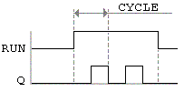
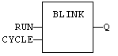
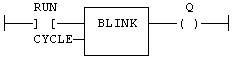

Function Block
Blink uniformly (symmetrically).
|
Name |
Type |
Description |
|
RUN |
BOOL |
Enabling command. |
|
CYCLE |
TIME |
Blinking period. |
|
Name |
Type |
Description |
|
Q |
BOOL |
Output blinking signal. |

The output signal is FALSE when the RUN input is FALSE. The CYCLE input is the complete period of the blinking signal. In LD, the input rung is the RUN input, and the output rung is the Q output.
MyBlinker is a declared instance of BLINK function block.
MyBlinker (RUN, CYCLE);
Q := MyBlinker.Q;

